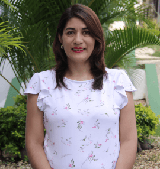
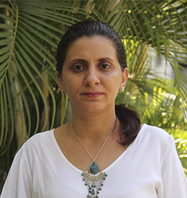

Grupo de Investigacion
El programa de Ingeniería de Sistemas cuenta con un grupo de investigación reconocido según los resultados de la convocatoria realizada por Colciencias en el 2018, denominado “Simulación de Tecnologías para procesos Industriales”, es un grupo interdisciplinario integrado por docentes de los dos programas de Ingeniería de la Facultad de Ciencias Básicas, Ingenierías y Arquitectura
| Linea de Investigacion | Lider |
|---|---|
| Ingenieria del Software | Jhon Mendez Alandete |
| SIMULACIÓN DE TECNOLOGÍAS PARA PROCESOS INDUSTRIALES | ÁREA DEL CONOCIMIENTO |
|---|---|
|
Director: Luty Gomezcasseres Pérez Categoría Minciencias: A |
1.- Ciencia y desarrollo tecnologíco 2.- Gestión de la tecnología y la innovación 3.- Ingeniería de Software 4.- Logística y Gestión de procesos 5.- Tecnología y calidad en la industria de alimento |
Semilleros de Investigacion
Semillero de Inteligencias de Negocios (SIN)

Director: Jhon Mendez Alandete
MAGÍSTER EN SOFTWARE LIBRE
jhon.mendez@cecar.edu.co
Semillero EcoSmartCity

Director: Miguel Romero Garavito
MAGÍSTER EN TECNOLOGÍAS DE LOS SISTEMAS DE ENERGÍA SOLAR FOTOVOLTAICA
miguel.romerog@cecar.edu.co
Semillero SoftDev

Directora: Andrea Burbano Bustos
MAGÍSTER EN EDUCACIÓN
andrea.burbano@cecar.edu.co
Semillero SEPIN

Directora: María Angélica García
CORDINADORA DEL PROGRAMA
maria.garciame@cecar.edu.co
Semillero Innotec

Directora: Claudia Lengua Cantero
DOCTORA EN GERENCIA Y POLÍTICA EDUCATIVA
claudia.lengua@cecar.edu.co
Semillero Bcing
Director: Carlos Cohen Manrique
MAGÍSTER INGENIERÍA DE SISTEMAS Y COMPUTACIÓN, PHD (C) PROYECTOS DE INGENIERÍA BASADOS EN TICS
carlos.cohen@cecar.edu.co